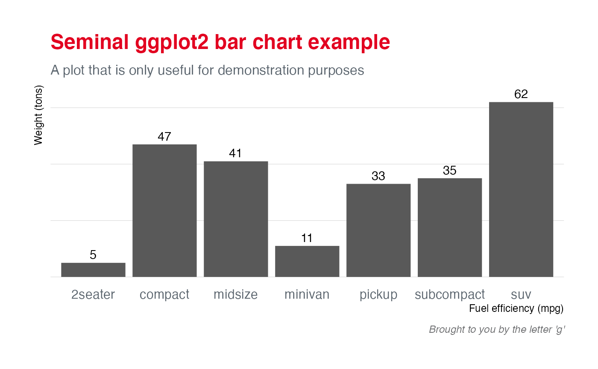

A ggplot2 theme for IHEID style plots. Adapted from Hrbrmstr's ipsum theme.
Source:R/theme.R
theme_iheid.RdA ggplot2 theme for IHEID style plots. Adapted from Hrbrmstr's ipsum theme.
Usage
theme_iheid(
base_family = "sans",
base_size = 11.5,
plot_title_family = base_family,
plot_title_size = 18,
plot_title_face = "bold",
plot_title_margin = 10,
subtitle_family = base_family,
subtitle_size = 12,
subtitle_face = "plain",
subtitle_margin = 15,
strip_text_family = base_family,
strip_text_size = 12,
strip_text_face = "plain",
caption_family = base_family,
caption_size = 9,
caption_face = "italic",
caption_margin = 10,
axis_text_size = base_size,
axis_title_family = subtitle_family,
axis_title_size = 9,
axis_title_face = "plain",
axis_title_just = "rt",
plot_margin = margin(30, 30, 30, 30),
grid_col = "grey85",
grid = TRUE,
axis_col = iheid_palette("IHEID")["IHEIDBlack"],
axis = FALSE,
ticks = FALSE
)Arguments
- base_family, base_size
base font family and size
- plot_title_family, plot_title_face, plot_title_size, plot_title_margin
plot title family, face, size and margi
- subtitle_family, subtitle_face, subtitle_size
plot subtitle family, face and size
- subtitle_margin
plot subtitle margin bottom (single numeric value)
- strip_text_family, strip_text_face, strip_text_size
facet label font family, face and size
- caption_family, caption_face, caption_size, caption_margin
plot caption family, face, size and margin
- axis_text_size
font size of axis text
- axis_title_family, axis_title_face, axis_title_size
axis title font family, face and size
- axis_title_just
axis title font justification, one of
[blmcrt]- plot_margin
plot margin (specify with
ggplot2::margin())- grid_col, axis_col
grid & axis colors; both default to
#cccccc- grid
panel grid (
TRUE,FALSE, or a combination ofX,x,Y,y)- axis
add x or y axes?
TRUE,FALSE, "xy"- ticks
ticks if
TRUEadd ticks
Examples
library(ggplot2)
library(dplyr)
# seminal scatterplot
ggplot(mtcars, aes(mpg, wt)) +
geom_point() +
labs(x="Fuel efficiency (mpg)", y="Weight (tons)",
title="Seminal ggplot2 scatterplot example",
subtitle="A plot that is only useful for demonstration purposes",
caption="Brought to you by the letter 'g'") +
theme_iheid()
# seminal bar chart
count(mpg, class) %>%
ggplot(aes(class, n)) +
geom_col() +
geom_text(aes(label=n), nudge_y=3) +
labs(x="Fuel efficiency (mpg)", y="Weight (tons)",
title="Seminal ggplot2 bar chart example",
subtitle="A plot that is only useful for demonstration purposes",
caption="Brought to you by the letter 'g'") +
theme_iheid(grid="Y") +
theme(axis.text.y=element_blank())
